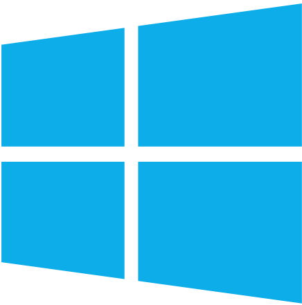
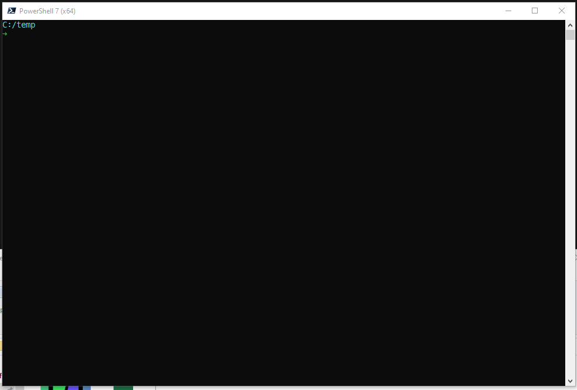
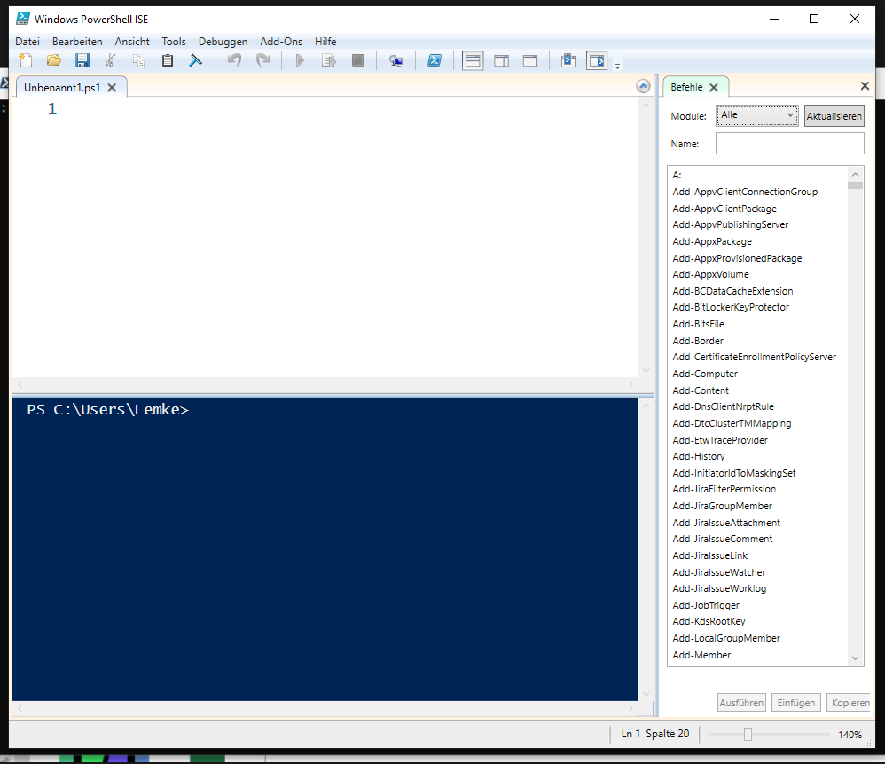
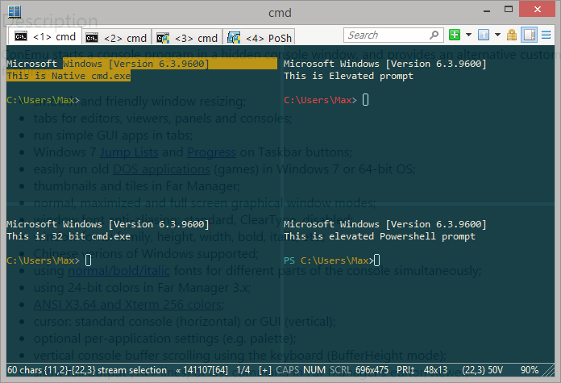
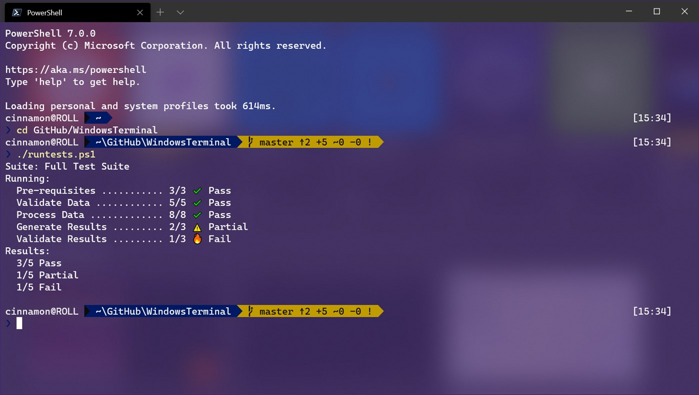
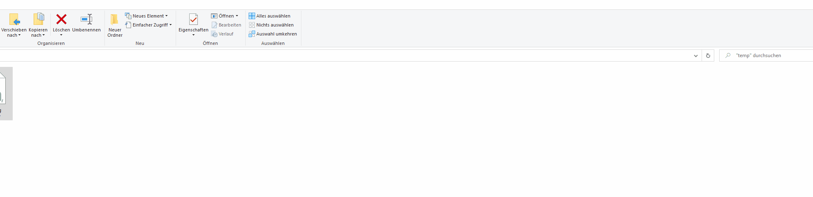

Powershell
Was ist das? Und warum will ich das nutzen?
Agenda
- Historie
- Terminal ↔ Shell
- Fonts
- Profile
- Module
- Einrichtung
Versionen und Historie
- 1. Release: November 2006
- aktuell höchste Version Powershell 7.1.1 (11.10.2020)
- Auf Windows 10 vorinstallierte Version: 5.2
Unterstützte Systeme
Unterstützte Systeme
seit Powershell 6:
Terminal ↔ Shell
klassisches Terminal
PowerShell ISE
ConEmu
LINK
Terminal App
 LINKDropdown-/Quake-Terminal (ConEmu)
Meine Einstellungen stelle ich auf Anfrage gern bereit.
Dropdown-/Quake-Terminal (Windows Terminal)
- Featurerequest offen
- Open Source Community Implementierung
Fonts

Profile
- wird beim Start ausgeführt
- unterschiedliche Orte für
- Windows Powershell
- Powershell
- Powershell ISE
Profilpfad für Environment bestimmen:
echo $PROFILE
Beispiel - Profil
New-Alias -Name g -Value git
function cgit { set-location "d:\git" }
Set-PSReadlineKeyHandler -Key Tab -Function Complete
Clear-Host
Beispiel - Methode
function RDP {
<#
.SYNOPSIS
Wrapper fuer mstsc
.PARAMETER HostName
Der Host auf welchen verbunden werden soll.
.EXAMPLE
RDP srvbeispiel
.EXAMPLE
RDP -HostName srvbeispiel
#>
param (
[parameter (Mandatory=$true)]
[string]$RDPHost
)
mstsc /v:${RDPHost} /prompt
}
Mein Profil
Mein Profil habe ich auf Github hinterlegt:github.com/Kikkirej/scripts
Mit einem Symlink lässt sich die Datei dann an die anderen Orte legen.
New-Item
-Path C:\Users\username\Documents\PowerShell\Microsoft.PowerShell_profile.ps1
-ItemType SymbolicLink
-Value C:\scripts\Microsoft.PowerShell_profile.ps1
Module
Installation
Möglichkeit zu Installation von Modulen direkt in der Powershell.(auch mit Proxy kein Problem)
Install-Module posh-git -Scope CurrentUser
Powershell Gallery
www.powershellgallery.comAchtung: hier nicht blind vertrauen.
Laden von Modulen
Damit die Module zur Laufzeit verfügbar sind müssen diese geladen werden.→ Profil
Import-Module posh-git
Empfohlene Module
- posh-git - Git Autovervollständigung
- Terminal-Icons
- posh-docker - Docker Autovervollständigung